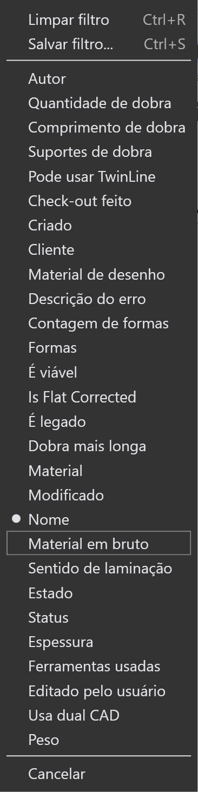
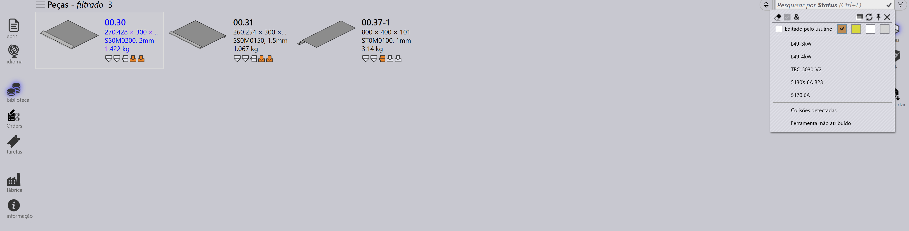
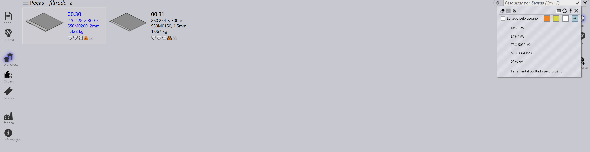
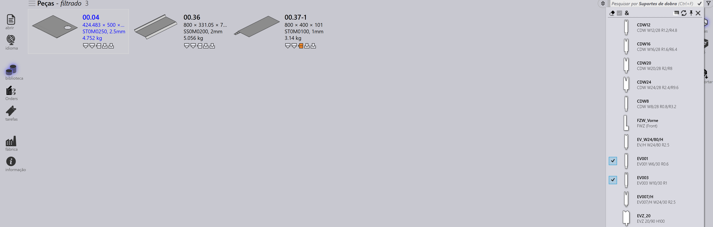
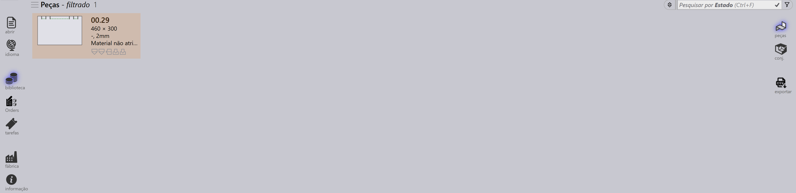

Filtros de peça
Os Filtros da Biblioteca de Peças permitem pesquisar e localizar rapidamente peças na biblioteca aplicando condições específicas. Ao restringir os resultados apenas às peças que atendem aos seus critérios, esses filtros facilitam o gerenciamento e o acesso eficiente às peças relevantes.

Status
-
Use o filtro Status para pesquisar peças com base no status do ferramental.
-
O menu suspenso exibe os estados de ferramental como caixas coloridas e todas as máquinas disponíveis e seus erros aplicáveis.
-
As caixas coloridas representam os seguintes estados:
-
Branco: Ferramental OK
-
Laranja: Ferramental com erro
-
Amarelo: Ferramental com aviso
-
Cinza: Ferramental suprimido
-
-
Se uma peça tiver erros de flange estreito ou ferramental não atribuído, selecioná-los exibirá as peças respectivas.

-
Peças com ferramental suprimido na máquina selecionada serão exibidas ao clicar na caixa colorida cinza.

Suportes de dobra
-
Use o filtro Suportes de dobra para pesquisar peças com base na ferramenta de dobra utilizada.
-
O menu suspenso mostra todas as ferramentas de dobra disponíveis e pode ser filtrado por nome da ferramenta, tipo (punch, gooseneck, radius, etc.) ou descrição.
-
Selecione múltiplas ferramentas e clique em Corresponder tudo|&** para classificar as ferramentas que utilizam ambas as ferramentas selecionadas.

Ferramentas usadas
-
Filtrar por Ferramentas usadas funciona de forma semelhante a filtrar por Suportes de dobra.
-
Ícones de ferramentas são exibidos em tamanhos proporcionais (não exatos, mas relativos).
-
Quando a pré-visualização do ferramental está aberta, passar o mouse sobre uma ferramenta na lista de filtros destaca essa ferramenta no painel de pré-visualização.
-
Múltiplas ferramentas podem ser selecionadas e aplicadas usando Corresponder tudo|&**.

Estado
-
Use o filtro Estado para pesquisar peças com base no estado atual.
-
O menu suspenso exibe todos os estados aplicáveis dependendo das peças disponíveis na biblioteca.
-
A lista de estados muda dinamicamente de acordo com as peças selecionadas e seu status.
-
Por exemplo, selecione Material Missing para visualizar peças em estado de material não resolvido.
